Qwen（通义千问）学习手册
阿里云开源 AI 模型「全家桶」的全景导览：47 个公开仓库横跨语言 / 代码 / 视觉 / 语音 / 图像 / 智能体。本手册先帮你看懂「他们都做了什么、各仓库啥关系、该先学哪个」，再挑出最适合上手做应用的 Qwen-Agent 框架逐层拆解到「在本机跑起来」。
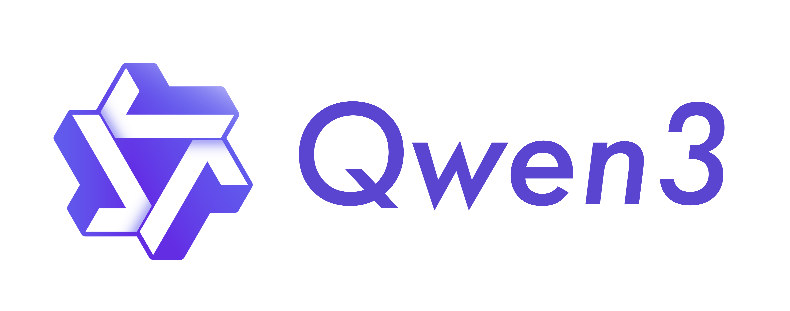
1 · Qwen 是什么
一句话：阿里云的通用 AI 模型团队（GitHub 组织名 Qwen / QwenLM），把自家「通义千问」系列模型及其周边工具大规模开源，覆盖从基础大模型到上层应用的整条栈。
组织官方简介就是 “Alibaba Cloud's general-purpose AI models”。它的打法是「开源模型 + 开源用法」：既放出模型权重（在 Hugging Face / ModelScope），也在 GitHub 放出用这些模型的代码——推理示例、智能体框架、终端编程工具、各模态的工具包。产出横跨：
🧠 语言 / 推理大模型
Qwen3、Qwen3.6、QwQ（推理）、Qwen2.5-Math（数学）—— 组织的地基。
👁️ 多模态模型
Qwen3-VL（看图）、Qwen3-Omni（全模态）、Qwen-Image（生图/改图）。
🎙️ 语音模型
Qwen3-TTS（语音合成）、Qwen3-ASR（语音识别）、Qwen-Audio。
🤖 智能体 / 工具
Qwen-Agent（框架，本手册重点）、qwen-code（终端编程 Agent）、Qwen3-Coder（代码模型）。
简单说：「模型」仓库给你能力，「应用 / 框架」仓库教你怎么把能力用起来。本手册的重点 Qwen-Agent 属于后者——它是 Qwen Chat 的后端框架。
2 · 项目全景地图 · 选型
47 个仓库不必逐个看。按「模态 / 用途」归类，并给出「你想干 X，先学哪个」的选型建议。下表为按星标排序的 Top（数据实抓于 2026-06-27）。
| 仓库 | 干什么 | 方向 | Star |
|---|---|---|---|
| Qwen3 | 旗舰语言大模型系列（权重 + 推理/部署说明） | 语言模型 | 27.3k |
| qwen-code | 住在终端里的开源 AI 编程 Agent（CLI） | 智能体/应用 | 25.6k |
| Qwen | 初代 Qwen（1.0/1.5）官方仓库 · 现为历史/汇总入口 | 语言模型 | 21.3k |
| Qwen3-VL | 视觉语言多模态模型（看图、读文档、视觉推理） | 多模态 | 19.5k |
| Qwen3-Coder | 代码版 Qwen3（驱动 qwen-code 的底层模型） | 代码模型 | 16.7k |
| Qwen-Agent | 构建 LLM 智能体的框架：函数调用 / MCP / 代码解释器 / RAG（本手册重点） | 智能体/框架 | 16.6k |
| Qwen3-TTS | 语音合成模型（流式、可设计音色、声音克隆） | 语音 | 12.2k |
| Qwen-Image | 图像生成 + 精准编辑基础模型（擅长文字渲染） | 多模态 | 8.1k |
| Qwen-VL | 初代视觉语言模型（Qwen3-VL 的前身） | 多模态 | 6.7k |
| Qwen3-Omni | 原生端到端「全模态」模型（文/图/音/视频） | 多模态 | 3.9k |
| Qwen3-ASR | 语音识别模型系列 | 语音 | 3.0k |
| Qwen3-Embedding | 文本向量 / 检索模型（RAG 的地基） | 检索 | 2.0k |
| Qwen2.5-Math | 数学专精模型（工具集成推理 TIR） | 语言模型 | 1.1k |
| QwQ | 推理模型系列（长思维链） | 语言模型 | 519 |
| 其余（长尾）：Qwen3.6（3.6k，最新 LLM）、Qwen2.5-Omni（4.0k）、Qwen2-Audio（2.1k）、Qwen-Image-Layered（2.0k）、Qwen3-VL-Embedding（1.3k）、Qwen-VLA（655，视觉-语言-动作）、qwen.cpp（627，C++ 推理）、Qwen-AgentWorld（582）、FlashQLA（557，注意力算子）、ParScale（480）、Qwen3Guard（472，护栏）、AutoIF / ProcessBench（数据与评测）、open-computer-use（164，电脑操作 Agent）… | |||
选型地图：你想干什么，先学哪个？
💬 用 / 部署一个聊天大模型
先学 Qwen3（拿权重 + vLLM/Ollama 部署）。要更新看 Qwen3.6；要强推理看 QwQ；数学看 Qwen2.5-Math。
🤖 自己搭多模态 / 工具型 Agent
先学 Qwen-Agent（本手册重点，框架本体）。底层模型用 Qwen3 / Qwen3-VL，需要代码能力配 Qwen3-Coder。
⌨️ 想要现成的 AI 编程助手
直接用 qwen-code（终端 CLI，开箱即用）。它由 Qwen3-Coder 模型驱动，不想读框架可先玩它。
👁️🎙️🎨 做视觉 / 语音 / 生图
看图读文档 Qwen3-VL；全模态 Qwen3-Omni；语音合成 Qwen3-TTS、识别 Qwen3-ASR；生图改图 Qwen-Image。
2b · 重点仓库详解 8 个
下面对按星标排名前 8 的仓库逐个给出「详细画像」：是什么、关键特性、与兄弟仓库的区别、何时该用、星标 + 最后更新、代表图、链接。长尾仓库见上面的全景地图表格。

① Qwen3 语言模型 · 旗舰
是什么：Qwen 团队的旗舰大语言模型系列（含 Dense 与 MoE 混合专家版本）。这个仓库本身主要是模型卡 + 推理/部署/微调说明，权重托管在 Hugging Face / ModelScope。它是整个 Qwen 生态的「地基模型」。
关键特性：覆盖从小到大的多种尺寸；支持「思考 / 非思考」双模式；原生擅长工具调用，与 Qwen-Agent 配套。
与兄弟的区别：它是模型不是框架——给你「能力」；Qwen-Agent 给你「怎么编排能力」。比 Qwen3-VL 少了视觉，比 Qwen3-Coder 通用、非代码专精。
何时用：你要一个可自部署的通用中文/多语聊天与推理模型时，从这里拿权重和部署命令。仓库 →
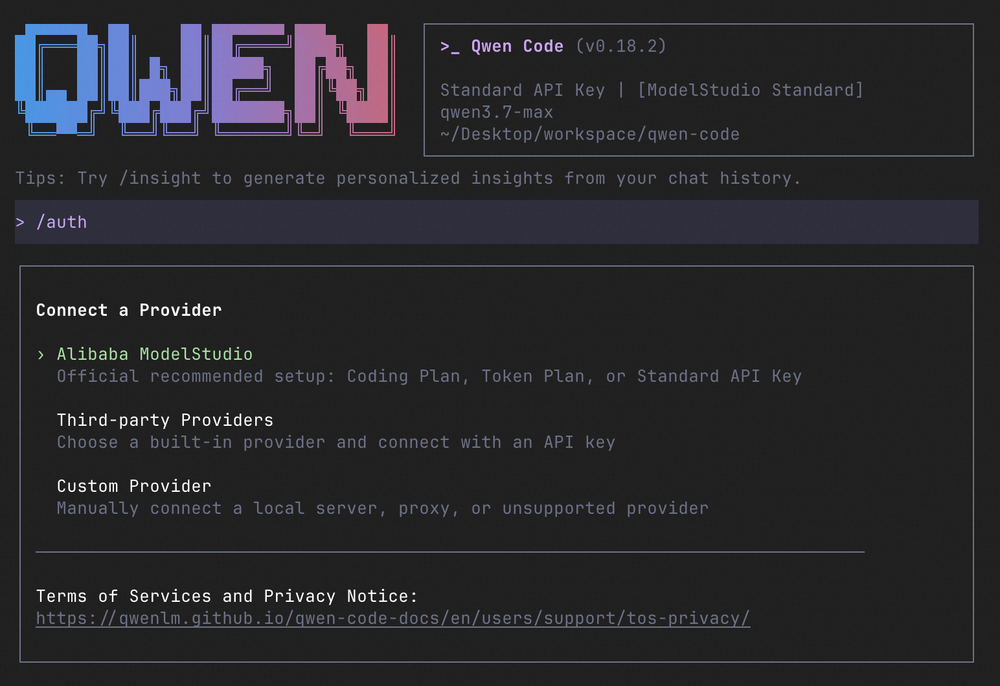
② qwen-code 智能体 / 应用
是什么：一个「住在终端里」的开源 AI 编程 Agent（命令行工具）。你在 shell 里和它对话，它能读写代码库、跑命令、调用工具，完成编码任务。是组织里更新最勤的仓库之一。
关键特性：CLI 交互（如截图里的 /auth、/insight 等斜杠命令）；可接 Alibaba ModelStudio 或第三方/自定义 provider；支持 MCP 工具。
与兄弟的区别：它是开箱即用的成品工具（TypeScript/Node 生态），不是给你写代码的 Python 框架（那是 Qwen-Agent）。它消费的「大脑」通常是 Qwen3-Coder 模型。
何时用：你想立刻有个能在终端帮你写代码的助手，而不想自己搭框架时。仓库 →
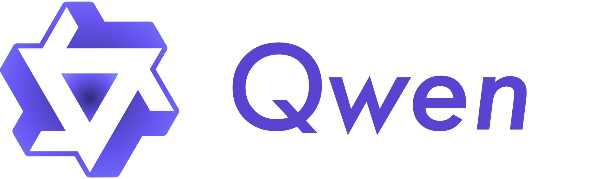
③ Qwen 语言模型 · 初代
是什么：最初的「通义千问」官方仓库（Qwen 1.0 / 1.5 时代），包含早期 chat 与预训练模型、量化、部署与微调脚本。如今更多作为历史与资源汇总入口（很多新模型的部署教程仍链回这里）。
关键特性：沉淀了 vLLM / Ollama / llama.cpp / 量化等大量部署文档；微信群、生态链接的集散地。
与兄弟的区别：它是「老家」——内容已被 Qwen3 等新仓库取代，但仍是理解 Qwen 演进与通用部署套路的好起点。星标高是历史积累。
何时用：想了解 Qwen 系列的来龙去脉、或找通用部署/量化教程时。仓库 →
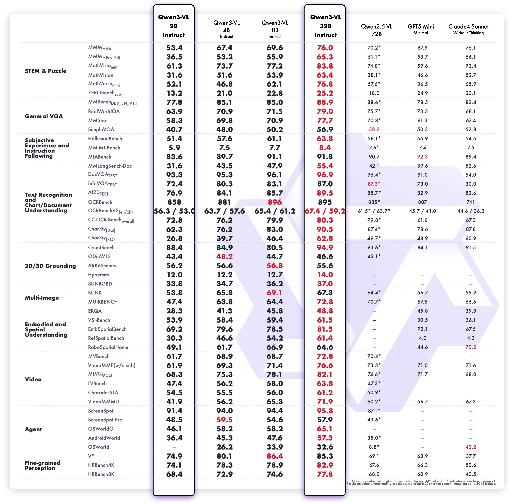
④ Qwen3-VL 多模态 · 视觉语言
是什么：Qwen 的视觉语言（VLM）模型系列：能看图、读文档/截图、做视觉推理与定位，并把「看到的」和「想到的」结合起来。仓库以 Notebook 示例为主，便于直接跑通看效果。
关键特性：多种尺寸（含 Instruct / Thinking 思考版）；强 OCR 与文档理解；可与工具结合（如 think-with-images 放大图像再回答）。
与兄弟的区别：比纯文本的 Qwen3 多了「眼睛」；比全模态 Qwen3-Omni 更聚焦图像/视频→文本，不做语音输出。是 Qwen-Agent 里视觉类 Worker 的常用后端。
何时用：任务涉及图片、扫描件、UI 截图、图表理解时。仓库 →
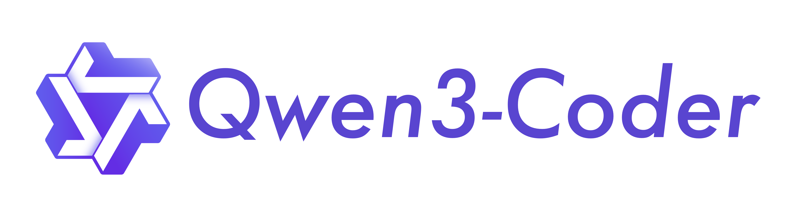
⑤ Qwen3-Coder 代码模型
是什么：Qwen3 的代码专精版本——为编程、工具调用、长上下文仓库级任务优化的大模型，是 qwen-code 终端工具背后的「大脑」。
关键特性：面向 agentic coding（自主多步写代码 + 调工具）；建议配 vLLM 内置 tool-parser 使用；强长上下文。
与兄弟的区别：它是模型（给能力），qwen-code 是用它的工具（给体验）；相对通用 Qwen3，它在代码与工具调用上更强、在闲聊上不是重点。
何时用：你要把代码能力接进自己的系统（vLLM 部署 + Qwen-Agent / qwen-code 调用）时。仓库 →
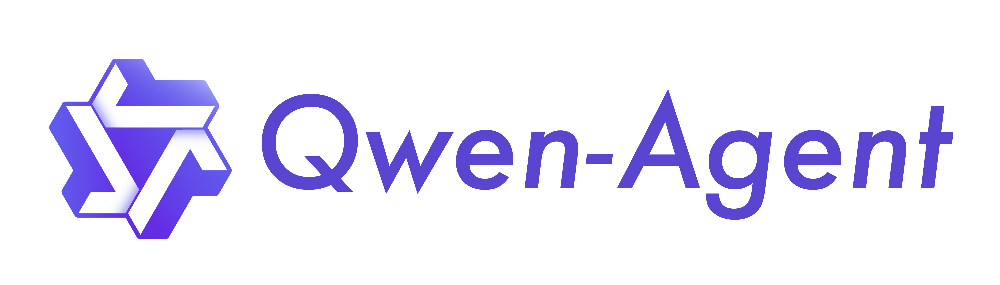
⑥ Qwen-Agent 智能体框架 · 本手册重点 ★
是什么：一个基于 Qwen 的「指令遵循 + 工具使用 + 规划 + 记忆」能力来开发 LLM 应用的框架。提供 LLM / Tool / Agent 三层原子组件，自带浏览器助手、代码解释器、自定义 Assistant 等示例应用。它就是 Qwen Chat 的后端。
关键特性：函数调用、MCP、Docker 沙箱代码解释器、RAG（含百万 token 长文档问答）、Gradio GUI 一键起 Demo。
与兄弟的区别：它是编排层——把上面那些「模型」组装成能用工具、能读文档的应用；不自带模型权重，模型来自 Qwen3 / Qwen3-VL 等。比 qwen-code 更底层、更可定制（Python 库 vs 成品 CLI）。
何时用：你要自己搭一个会用工具、能读文件、可定制流程的 Agent 时。下面第 3–8 节就是它的深入拆解。 仓库 →
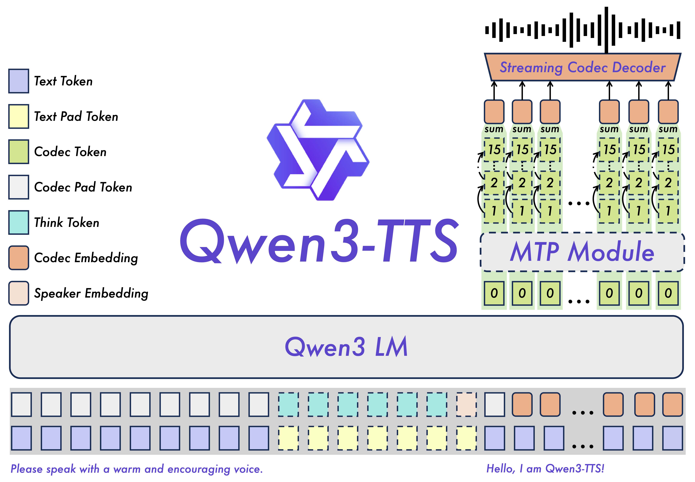
⑦ Qwen3-TTS 语音合成
是什么：开源的文本转语音（TTS）模型系列，主打稳定、富表现力的语音生成，支持流式输出、自由音色设计与逼真的声音克隆。
关键特性：流式合成（低延迟）；free-form voice design（用文字描述音色）；voice cloning（少样本克隆音色）。
与兄弟的区别：它管「让模型开口说话」，与负责「听懂」的 Qwen3-ASR 互为一对；与 Qwen3-Omni 相比是单一语音任务的专精模型，更轻、更易单独部署。
何时用：要给应用加配音、语音播报或定制音色时。仓库 →
⑧ Qwen-Image 多模态 · 生图/改图
是什么：图像生成与精准编辑的基础模型，特别擅长复杂文字渲染（在图里准确写字）和按指令做局部编辑。
关键特性：文生图 + 图像编辑（edit 系列）；强中英文字渲染；有 Layered（分层可编辑）等衍生仓库。
与兄弟的区别：Qwen3-VL 是「看懂图」（图→文），Qwen-Image 是「画出图 / 改图」（文→图）；两者方向相反、可互补。
何时用：要生成海报/插图、或对现有图做指令式编辑（尤其含文字）时。仓库 →
3 · Qwen-Agent 这是什么 深入开始
一个用 Qwen 模型来开发 LLM 应用的 Python 框架——把「函数调用、工具使用、规划、记忆」这些 Agent 能力封装成可复用组件，让你专注于「定义 Agent 干什么」。
它基于 Qwen（推荐 ≥3.0）的指令遵循与工具能力，附带浏览器助手 BrowserQwen、代码解释器、自定义 Assistant 等示例应用。Apache-2.0 许可，pip install qwen-agent 即装，且现在就是 Qwen Chat 的后端。
三个开箱示例
自定义工具 + 助手
注册一个画图工具，让 Assistant 读 PDF、写代码、调用工具，几十行代码起一个 Agent。
代码解释器
Agent 自主写 Python 并在 Docker 沙箱里执行（如下图：取数据→画饼图）。
BrowserQwen 浏览器助手
Chrome 扩展 + 后端，边浏览网页边问答、做多网页总结。
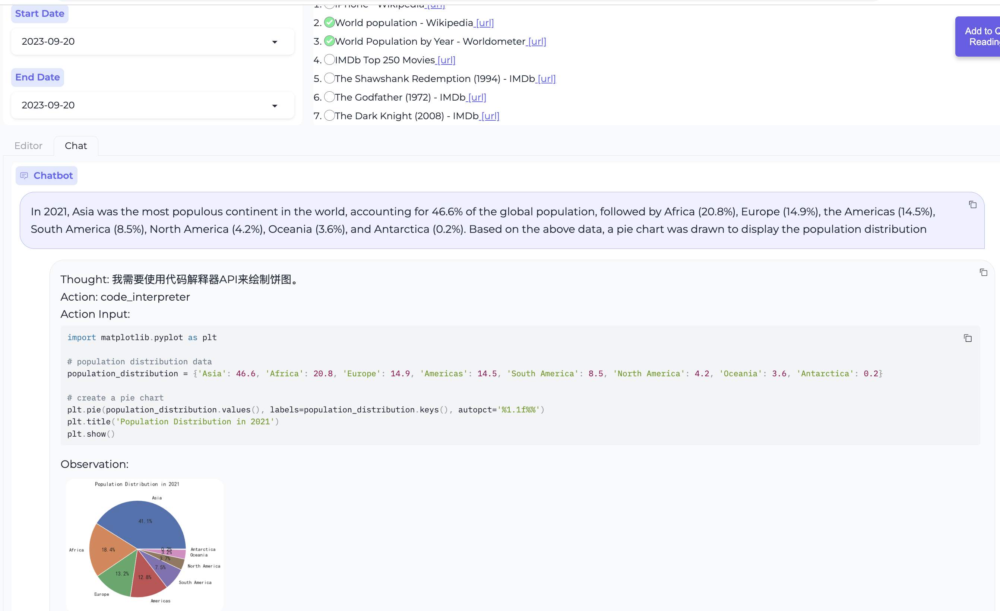
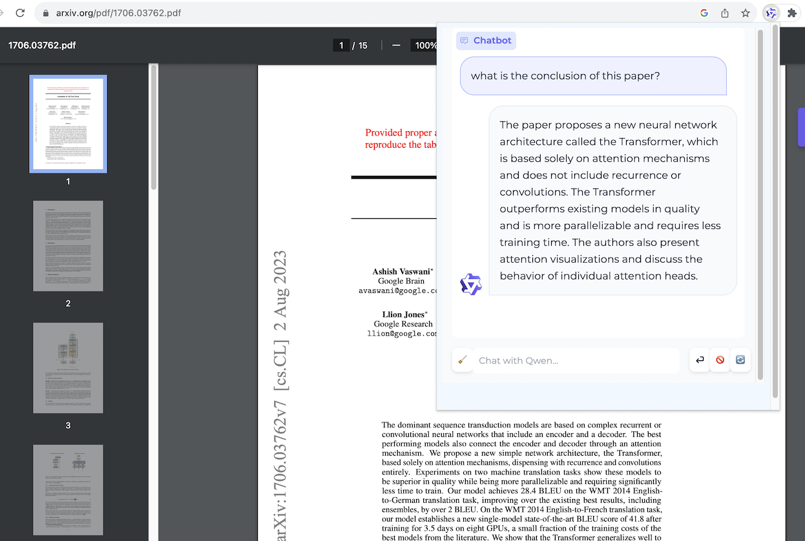
4 · 面向领域 & 亮点
问题域：用 LLM 搭「会用工具、能读资料、可编排」的智能体应用，尤其是函数调用、RAG 与多步工具任务。
新颖 / 真正有用的点
- 三层原子组件：LLM（
BaseChatModel，自带函数调用）+ Tool（BaseTool，可@register_tool注册）+ Agent（Agent，编排两者）。学会这三个类就会用整个框架。 - 原生函数调用 / 并行工具调用：默认模板支持并行 function call，且框架自己解析 vLLM 的工具输出。
- MCP 支持：直接接入 Model Context Protocol 生态的各种 server（文件系统、SQLite、memory…）。
- Docker 沙箱代码解释器：让 Agent 安全地写代码并执行，返回结果（图/数值）。
- 长文档 RAG：内置一套快速 RAG 与一套「昂贵但更强」的并行文档问答，号称在 百万 token 大海捞针中表现完美。
- 一行起 GUI：
WebUI(bot).run()即用 Gradio 启动可对话的网页 Demo。
它的「身份」：Qwen Chat 的后端
这点很关键——Qwen-Agent 不是一个玩具 demo 框架，而是在生产里支撑官方 Qwen Chat 的同一套代码。所以它既适合学习（示例丰富、API 简洁），也经得起实际负载。
5 · 架构组成
三层原子抽象：底层 LLM（统一各家模型服务）→ 中层 Tool（可注册的能力）→ 上层 Agent（把 LLM + 工具 + 记忆编排起来）。
① LLM 层
BaseChatModel 统一封装：DashScope（qwen_dashscope）、OpenAI 兼容端点（vLLM / Ollama，oai.py）、VL / Omni / Audio 变体、本地 transformers。内置函数调用与 prompt 模板。
② Tool 层
BaseTool + @register_tool。内置 code_interpreter、retrieval(RAG)、web_search、doc_parser、image_gen、mcp_manager（接 MCP）等；可自定义。
③ Agent 层
Agent 基类定义 run() 流式协议；高层有 Assistant（最常用，带 RAG/读文件）、FnCallAgent、ReActChat、GroupChat（多智能体）、Router。
内置 Agent 一览（决定「怎么编排」）
两种用法：纯库 vs 带 GUI
| 用法 | 依赖 | 适用 |
|---|---|---|
| 最小（纯函数调用） | pip install qwen-agent | 把 Agent 嵌进自己的程序——推荐入门用这个 |
| 全功能 | qwen-agent[gui,rag,code_interpreter,mcp]（Gradio / 文档解析 / Docker / MCP） | 要 GUI、RAG、代码沙箱、MCP 时按需加 |
6 · 技术原理
把「Agent 怎么跑起来」拆成四件事：函数调用主循环、ReAct 式思考、长文档 RAG、MCP / 代码沙箱。
① 函数调用主循环（FnCallAgent）
核心循环很朴素：LLM 生成 → 若产生 function call 则执行对应 Tool.call() → 把「观察结果」回灌给 LLM → 再生成，直到没有工具调用、给出最终答案。框架的「魔法」在于一套 function-call prompt 模板（llm/fncall_prompts/nous_fncall_prompt.py），把工具描述编码进 prompt，并解析模型输出里的工具调用——所以即便后端只是个普通 OpenAI 兼容端点也能稳定触发工具。
② ReAct：Thought / Action / Observation
第 3 节那张代码解释器截图正是 ReAct 范式的实物：模型先写 Thought（我需要用代码解释器画饼图），再给 Action: code_interpreter 与 Action Input（matplotlib 代码），框架执行后把 Observation（运行结果 / 图）回灌——这就是 ReActChat / FnCallAgent 在干的事。
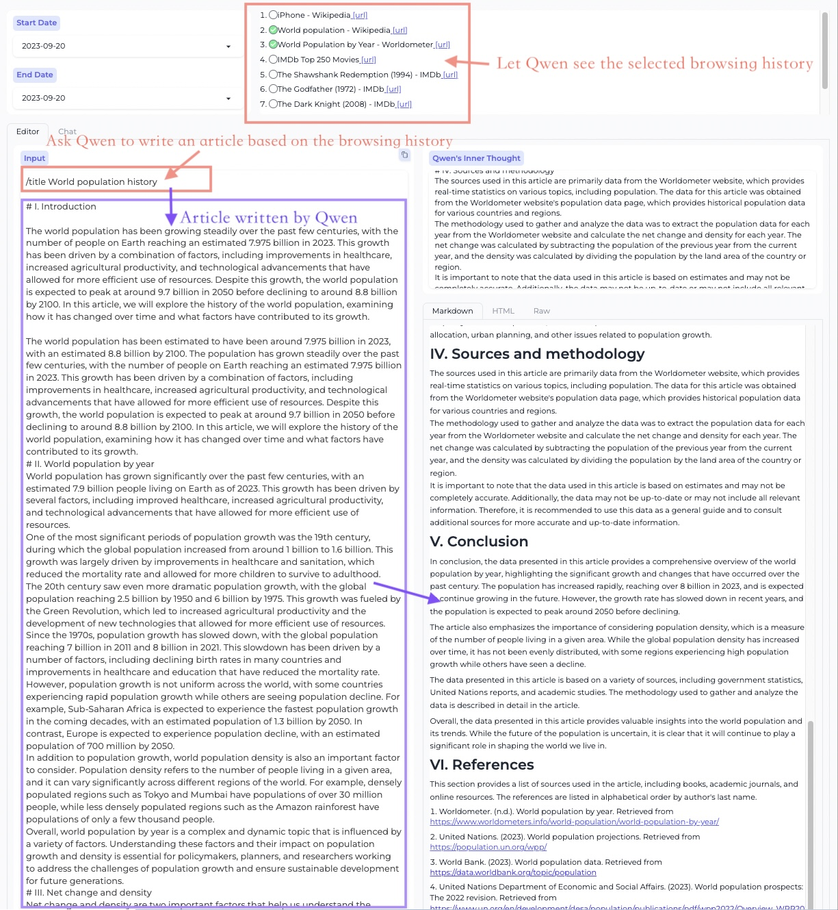
③ 长文档 RAG（百万 token 问答）
面对超长文档，Qwen-Agent 提供两条路：一条快速 RAG（retrieval 工具 + BM25/向量），一条更贵但更强的并行文档问答（把文档切片并行处理再汇总）。官方称其在两个高难基准上优于原生长上下文模型，且在百万 token 单针「大海捞针」压力测试中表现完美。
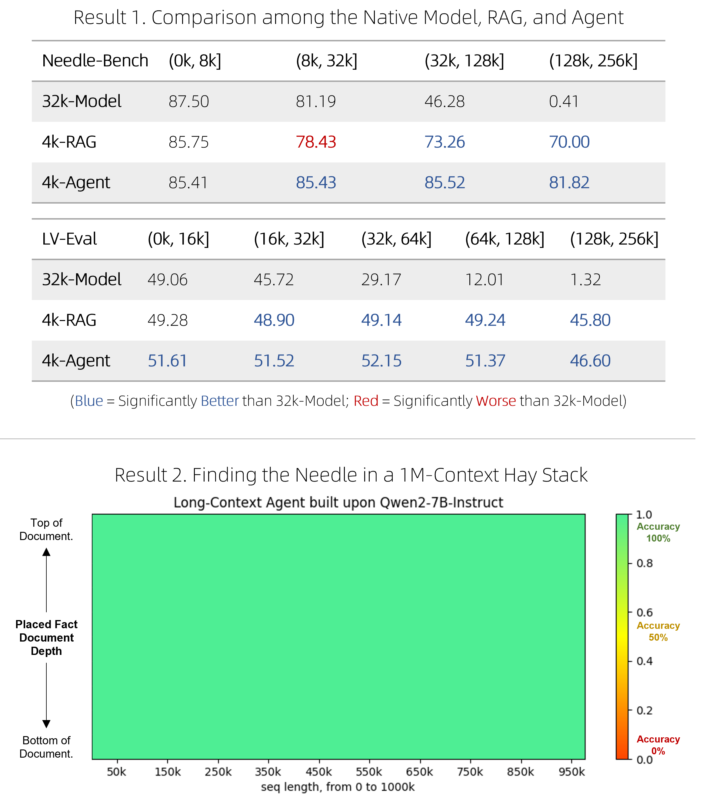
④ MCP 与代码解释器沙箱
MCP：通过 mcp_manager 接入 Model Context Protocol 的 server（用 npx / uvx 起 filesystem、sqlite、memory 等），工具生态即插即用。代码解释器：基于本地 Docker 容器实现隔离沙箱，Agent 自主写代码并在其中安全执行（仅挂载指定工作目录）。官方明确提醒：沙箱是基础隔离，生产环境仍需谨慎。
6b · 代码结构与技术栈 从这里开始读
「这个代码库到底怎么搭的、我该从哪个文件开始读？」——不用 clone，全部来自 GitHub API（languages / git trees）与 setup.py，实抓于 2026-06-27。
① 技术栈（按代码字节数）
压倒性是 Python（框架本体）；TypeScript / CSS / JS 来自 browser_qwen/ 这个 Chrome 扩展；MDX 来自文档站；Dockerfile 给代码解释器沙箱。
② 关键依赖（来自 setup.py）
| 依赖 | 属于 | 作用 |
|---|---|---|
dashscope | 核心 | 阿里云 DashScope 模型服务 SDK（默认模型后端） |
openai | 核心 | 调用 OpenAI 兼容端点（vLLM / Ollama 走这条） |
pydantic>=2.3 | 核心 | 消息 / 配置的数据校验与建模 |
tiktoken · json5 · jsonschema | 核心 | 分词计 token、宽松 JSON 解析、工具参数校验 |
gradio==5.23.1 · modelscope_studio | [gui] | 一行起网页 Demo（版本钉死，兼容性敏感） |
pdfplumber·python-docx·rank_bm25·jieba | [rag] | 解析 PDF/Word/PPT + BM25 中文检索（RAG） |
fastapi · uvicorn · jupyter | [code_interpreter] | 沙箱内的执行服务 |
sympy · numpy · scipy | [python_executor] | 数学求解（配 Qwen2.5-Math 的 TIR） |
mcp | [mcp] | Model Context Protocol 客户端 |
设计哲学很清楚：核心极简（只为函数调用），重依赖（GUI / RAG / 沙箱 / 数学）全放进 extras_require 按需安装。
③ 目录树（顶层 + qwen_agent/，已标注）
Qwen-Agent/
├─ qwen_agent/ # ★ 框架本体（Python 包）
│ ├─ agent.py # 抽象基类 Agent：定义 run() 流式协议
│ ├─ agents/ (17 文件) # 各种 Agent：assistant / fncall_agent / react_chat /
│ │ # router / group_chat / tir_agent / article_agent ...
│ ├─ llm/ (14 文件) # 模型适配层：base(BaseChatModel) / oai / qwen_dashscope /
│ │ # qwenvl_* / function_calling / fncall_prompts(模板)
│ ├─ tools/ (16 文件) # 工具：base(BaseTool) / code_interpreter / retrieval /
│ │ # web_search / doc_parser / image_gen / mcp_manager ...
│ ├─ memory/ # memory.py：基于检索的记忆
│ ├─ gui/ # WebUI（Gradio 封装）
│ └─ utils/, settings.py, multi_agent_hub.py
├─ examples/ (39 文件) # ★ 最佳学习入口：assistant_qwen3.py / function_calling.py /
│ # assistant_rag.py / group_chat_* / cookbook_*.ipynb ...
├─ qwen_server/ # BrowserQwen 的后端服务（run_server.py 启）
├─ browser_qwen/ # BrowserQwen 的 Chrome 扩展（TS/CSS/JS 即来自这里）
├─ benchmark/, tests/ # 评测与测试
├─ qwen-agent-docs/ # 文档站（MDX）
├─ setup.py # 依赖与 extras 定义（见上表）
└─ README.md / README_CN.md④ 从这里开始读（推荐顺序）
examples/assistant_qwen3.py— 最短的可运行示例，先看一个 Assistant 怎么配置、怎么bot.run()。qwen_agent/agent.py— 抽象基类Agent，理解run()/_run()的流式生成协议（所有 Agent 的共同骨架）。qwen_agent/agents/fncall_agent.py— 函数调用主循环：生成 → 调工具 → 观察 → 再生成（第 6 节①的代码实现）。qwen_agent/agents/assistant.py— 在 FnCallAgent 上加 RAG / 读文件，最常用的 Agent，建议精读。qwen_agent/tools/base.py—BaseTool与@register_tool：工具是怎么注册、怎么被调用的。qwen_agent/llm/base.py—BaseChatModel：模型适配层入口，看chat()如何统一各家后端。qwen_agent/llm/fncall_prompts/nous_fncall_prompt.py— 工具调用的 prompt 模板，框架「让普通模型也会用工具」的关键。qwen_agent/agents/react_chat.py— 想看 ReAct 范式（对照第 6 节②的 Thought/Action/Observation 截图）。
7 · 怎么部署使用 官方步骤
环境要求：Python；GUI 需 ≥ 3.10。纯函数调用不需要 GPU（调云端 API 即可）；代码解释器要 Docker；MCP 的部分 server 要 Node.js。入门建议：最小安装 + 一个 examples 跑通。
安装
# 全功能（GUI + RAG + 代码解释器 + MCP）
pip install -U "qwen-agent[gui,rag,code_interpreter,mcp]"
# 或最小安装（仅函数调用），推荐先用这个学习
# pip install -U qwen-agent准备模型服务（二选一）
# A) 用阿里云 DashScope（最省事）
export DASHSCOPE_API_KEY="你的key"
# Windows PowerShell: $env:DASHSCOPE_API_KEY="..."
# B) 用自部署的 OpenAI 兼容端点（vLLM / Ollama）
# llm_cfg = {'model':'qwen3-32b','model_server':'http://localhost:8000/v1','api_key':'EMPTY'}最小示例（几十行起一个 Agent）
from qwen_agent.agents import Assistant
llm_cfg = {'model': 'qwen-max-latest', 'model_type': 'qwen_dashscope'}
tools = ['code_interpreter'] # 内置工具；也可 @register_tool 自定义
bot = Assistant(llm=llm_cfg, function_list=tools,
files=['./examples/resource/doc.pdf']) # 给它一个 PDF
messages = [{'role': 'user', 'content': '总结这份 PDF 并画个柱状图'}]
for rsp in bot.run(messages=messages): # 流式输出
print(rsp)一行起 GUI / 跑官方示例
from qwen_agent.gui import WebUI
WebUI(bot).run() # 浏览器里和 Agent 对话
# 更多示例（克隆仓库后）：
python examples/assistant_qwen3.py # 函数调用
python examples/assistant_rag.py # 长文档 RAG
python examples/assistant_mcp_sqlite_bot.py # 接 MCP- 官方文档站：qwenlm.github.io/Qwen-Agent（指南 + DeepPlanning 基准）
- BrowserQwen（浏览器助手）：见仓库
browser_qwen.md - 代码解释器需先装好并启动 Docker；MCP 的部分 server 需 Node.js / uv
8 · 我的实操记录 待回填
本节按计划暂不真正安装（先把脚本和检查准备好，等你决定真装时一键回填本节）。当前 scripts/ 目录已生成两个脚本：
🔍 scripts/check-env.ps1
检查 Python(≥3.10 跑 GUI)、pip、git、（可选）Docker / Node.js、DASHSCOPE_API_KEY 是否就绪。真装前先跑它。
⬇️ scripts/setup-qwen-agent.ps1
建 venv、pip 安装 qwen-agent[全功能]，并提示下一步。默认 dry-run，加 -Run 才真正执行。
建议的真装流程（Windows）
# 1. 先体检
./scripts/check-env.ps1
# 2. 预览将要执行的动作（不改动任何东西）
./scripts/setup-qwen-agent.ps1
# 3. 确认无误后真正执行（建 venv + 装 qwen-agent）
./scripts/setup-qwen-agent.ps1 -Run▢ 回填占位（真装后补这里）
- 环境体检输出（check-env 截图 / 文本）
- 安装过程中的报错与解决（踩坑日志，尤其 gradio 版本兼容）
- 最小示例跑通截图（assistant_qwen3.py / WebUI）
- 代码解释器（Docker 沙箱）实际效果截图
- RAG / MCP 示例的实际效果
9 · 相关 GitHub 项目
把 Qwen-Agent 放进版图里看：左边是同组织里和它配套的兄弟仓库，右边是外部同类的主流 Agent 框架。星标与「最后更新」为 GitHub API 实抓于 2026-06-27 的真实数据。
同组织相关仓库（一起用更香）
🧠 Qwen3 / Qwen3-Coder
功能：Qwen-Agent 的「大脑」——通用与代码模型，用 vLLM 部成 OpenAI 兼容端点即可被调用。
差异：提供「模型」，Qwen-Agent 提供「编排」。
⭐27.3k / 16.7k · Qwen3
⌨️ qwen-code
功能：终端编程 Agent（成品 CLI），是「应用」层的另一条线。
差异：开箱即用的工具 (TS)；Qwen-Agent 是可定制的库 (Python)。
⭐25.6k · 2026-06-27 · 仓库
外部同类：主流 Agent 框架对比
| 项目 | 定位 / 功能 | 与 Qwen-Agent 的差异 | 星标 | 最后更新 |
|---|---|---|---|---|
| Qwen-Agent | LLM 智能体框架（LLM/Tool/Agent 三件套 + RAG + MCP） | 基准本体：官方、轻量、与 Qwen 深度配套，是 Qwen Chat 后端；聚焦函数调用 / 工具 / 长文档 | 16.6k | 2026-03-04 |
| LangChain | 通用 LLM / Agent 工程平台，生态最大 | 组件海量但偏重、模型中立；Qwen-Agent 更聚焦、与 Qwen 配套更顺 | 140k | 2026-06-26 |
| Dify | 生产级 Agentic 工作流平台，带可视化 GUI | 低代码 GUI + 可托管；Qwen-Agent 是代码库、更偏定制与嵌入 | 147k | 2026-06-27 |
| AutoGen | 微软的多智能体对话编程框架 | 核心是多 Agent 会话；Qwen-Agent 核心是单 Agent 函数调用 + 工具（也有 GroupChat） | 59k | 2026-04-15 |
| CrewAI | 角色扮演式多智能体编排 | 主打角色协作、轻量上手；Qwen-Agent 强在工具/RAG 与 Qwen 配套 | 54k | 2026-06-27 |
组织层面：和谁比？（其他开源模型家族）
| 项目 | 定位 | 星标 | 最后更新 |
|---|---|---|---|
| DeepSeek-V3 | 另一中国开源大模型家族的旗舰（对标 Qwen3） | 104k | 2025-08-28 |
| meta-llama/llama-models | Meta Llama 模型家族的工具/卡片仓库 | 7.6k | 2026-02-11 |
10 · 学习视频
真实可点的 YouTube 视频（封面已下载到本地、ID 已校验）。诚实说明：Qwen 官方没有维护一套权威的「教程视频系列」，最权威的是官方博客与文档；下面分「项目专属」与「相关主题」两类，均为社区教程。
① 项目专属（Qwen-Agent 本体）
② 相关主题（用 Qwen 搭 Agent / 工具调用）
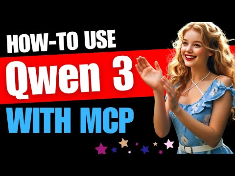
YouTube对应 MCP/工具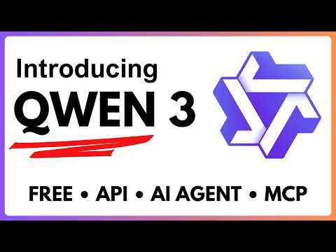
YouTubeQwen3 总览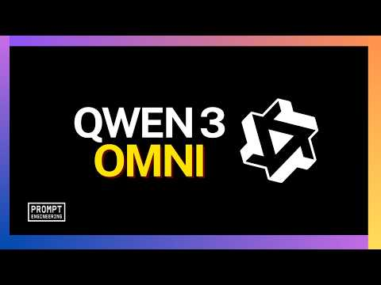
YouTube多模态背景③ 文字资料（最权威）
- Qwen 官方 Blog — 每个新模型/方法的第一手介绍
- Qwen-Agent 官方文档 — 指南 + DeepPlanning 智能体基准
- 动手最实在的资料其实是仓库的
examples/目录（39 个示例，从 function_calling 到 RAG 到 MCP，循序渐进），配合第 6b 节的阅读顺序看。
11 · 术语表 可搜索
学新项目最大的拦路虎是黑话。这里收录本手册出现的关键术语，输入关键词即时过滤（中英文都行）。
./assets/，可离线打开本页。